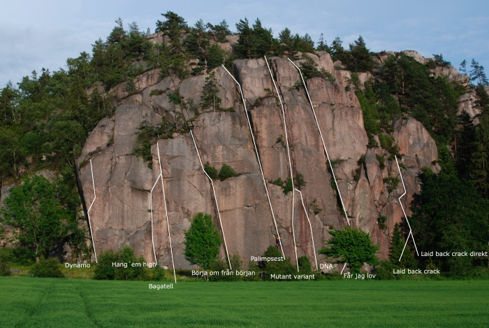

Galgeberget
Kategori:trad
Kategori:Engelska
Introduktion
Ett populärt berg som består av två klippor, Lilla och Stora Galgeberget. Stora Galgeberget har två väggar, västväggen och sydväggen. Västväggen syns direkt från parkeringen och sydväggen kommer man till genom att runda västväggen. Återkomsten (4+) är en fin nybörjarled och där utöver har berget många leder av mycket hög kvalitet i mellanregistret och uppåt.
På Lilla Galgeberget går många vackra men svåra linjer.
Karaktär
Klassisk sprick och vägg-klättring. Galgeberget (båda) är bultfria berg och inbefattas av Bohusläns Klätterklubbs bultpolicy om att hållas bultfria i framtiden.
Vägbeskrivning
Sväng av väg 162 vid Coop i Brodalen och sväng först höger i Brodalen och sen vänster mot Härnäset. Sväng därefter höger när du kommer till avtagsvägen mot Café Röe gård. Vid Röe gård sväng vänster på grusvägen tills du kommer till den iordninggjorda parkeringen för klättrare. Båda bergen syns från parkeringen.
Access
Leder
Lilla Galgberget
-
- Clark Kent
- 7
- Sprickan längst till vänster om Ängsland. Leden ser lätt ut men kräver sin stålman.
-
- Pyspunka
- 7
- Till höger om Clark Kent. Fingerrisset i mitten av nordväggen (gemensamt med Ängsland) traverserar mot vänster till sprickan. Brant klättring på stora grepp. Ihållande.
-
- Science friction
- 7+
- Älskat och hatat stämdieder. Obligatorisk delkurs för den komplette bohusklättraren. Följ diedret i 10m, därefter ut på högerväggen till hylla med block.
-
- Aretmetik
- 7+ R/X
- Areten till höger om Science friction. Superb vägg och aretklättring för klättrare med goda nerver. Säkras med skyhooks och småkilar. Inga falltester före 1 bestigningen. Inga därefter tack!
-
- Än du'rå hörnet
- 7+/8-
- Underbart varierad pärla!
-
- Abra kadabra
- 8/8+
- Sprickan till höger om Än du'rå hörnet. Obs detta är inte den fria versionen av "Sgt. Ripley". Sgt. Ripley går längre till höger.
-
- Skräckpropaganda
- 9-
- Startar som Dangan Runner men viker av lite vänster vid det lilla taket i slutet av diedern. Sen rakt upp
-
- Dangan runner
- 8-
- Spricklinje som börjar på högra kanten av lilla galgbergets huvudvägg.Upp i ett litet dieder till ett tak och sedan ut till höger. Fin jämn balansklättring som är ok säkrad med kilar - för den som orkar.
-
- Hokus Fokus
- 8
- Startar som Döv för en dag men viker av åt vänster för att avsluta som Dangan runner
-
- Döv för en dag
- 8/8+
- Linjen till vänster om Masken, med en snygg liggande dieder i slutet. Starta från höger.
-
- Masken
- 7
- Obligatoriskt inträdesprov till jamskolans högre kurser.
-
- The Cabibo Kobayashi Maskawa - Mixing Matrix
- 8-
-
-
- Fotnoten
- 5
- Det vänligt lutande hörnet som avslutar sydväggen till höger om Masken. Elegant och teknisk friktionsklättring. Välsäkrad för den som är händig med småkilar.
Stora Galgberget
Vastvaggen

-
- Dynamo
- 8
- Den venstre areten på Stora Galgeberget. Flott og spennende klatring med utvalgte små, men gode sikringer. Siste halvdel av ruta er lett riss til toppen.
-
- Hang´em high
- 8
- Diedern vänster om Bagatell. Upp till överhänget, så ut på areten och upp på svaet. Utsteg som Bagatell.
-
- Bagatell
- 6+
- En välsäkrad klassiker.
-
- Börja om från början
- 5+
- Linjen till höger om Bagatel. Kruxet är insteget spotta gärna. Fira av från hyllan ovanför till höger.
-
- Palimpsest
- 5+
- Vänstervänd diederlinje till vänster om DNA. Jämn och varierad kalasklättring.
-
- Laid back crack
- 7+
- Brant vänsterlutande spricka längst till höger på västväggen. Börjar med en kort hangel till höger, sedan layback och fingerjam. När det flackar av går leden snett upp till höger några meter till firningsslinga från block.
-
- Laid back crack direkt
- 8-
- Direktstart till Laid back crack. Boulderstart på desperat tunna laybacks. Akta fotknölarna.
De tre nästa lederna ligger "runt hörnet" mellan Stora Galgebergets västvägg og sydvägg.
-
- Ducati
- 7-
- Den snygga bågen som leder in i Skyggediedret (det uppenbara hörnet ett stycke upp i skogen på sydsidan, grad 6). Småknepig klättring.
Sydväggen
-
- Cameo
- 6 R/X
- Väggen och arêten rakt ovanför Galgen och Gritarêten. Startas med fördel med Galgen. Se till att lägga några bra säkringar på hyllan under taket i botten av arêten, de är allt du får. Kliv sedan upp på hyllan till höger och följ rampen som går snett åt vänster på väggen ända ut till själva arêten. Luftigt!
-
- På ruinens brant
- 8-
- Areten till höger på hyllan, tämligen given linje
-
- Den Östgötska papegjan
- 6+/7-
-
-
- En Sexa skåne
- 6
- Start Strax v om Bortom allt förnuft, Dragning åt vänster
-
- Bortom allt fornuft
- 6+
- Nervkittlande, sparsamt men tillräckligt säkrad resa längs tunna riss mot toppen.
-
- Ormbiten
- 6
- En huggorm ligger pa leden. Lat den vara i fred (2007)
-
- ?
- 6
- Startar på svaplattan tv om Återkomsten, går krystat nära nästa led, mycket kul
In English
Description
A popular crag that has two sectors, Lilla- and Stora Galgeberget.
Stora Galgeberget
has two faces, the west face and the south face. The west face is visible directly from the parking area, and you will get to the south face when you have come around the west face. There is one good new-beginner's route,
(4+), the rest of the routes are all very good middle- to upper grade routes.
Lilla Galgeberget has many beautiful, but quite hard, routes.
Classic crack and face climbing. Galgeberget is bolt free and follows the Bohusläns Klätterklubb's bolt policy on staying bolt free in the future.
Please read the
access
notes above
Directions
Turn off route 162 near the general store in Brodalen and then take your first right. Take your second left towards Härnäset (the first road on the left you pass by is into a housing complex). Take a right hand turn onto the road where there is a sign for Cafe Röe gård. Near Röe gård take a left onto a dirt road until you come to a designated parking lot for climbers on the left. You can see both cliffs from the parking.
Kategori:Bohuslän
Kategori:Barnvänligt
Kategori:Vertikalt
Copyright (C) Permission is granted to copy, distribute and/or modify this document under the terms of the GNU Free Documentation License, Version 1.3